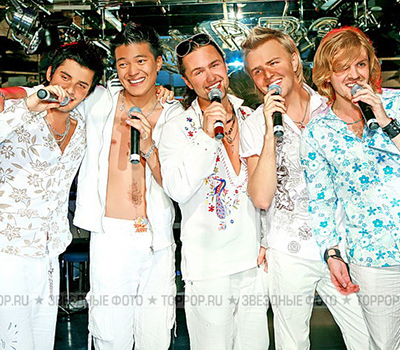

Introduction to Pop

Pop music is a kind of music style, which refers to music created with the main purpose of catering
to the tastes of a broad audience. It is commercial music entertainment and all related "industrial"
phenomena. Its marketability is primary, and its artistry is secondary. Popular music originated in
the United States at the end of the 19th century and the beginning of the 20th century. From the
perspective of the music system, popular music is music developed on the basis of American popular
music structures such as Ding Bang Alley music, blues, jazz, rock music, and Thor music. Its styles
are diverse and rich in forms, which can generally refer to urban mass music born after the 20th
century, such as Jazz, Rock, Soul, Blues, Reggae, Rap, Hip-Hop, Disco, and New Age.
History of Western Pop Music
A brief history of western popular music, as an important part of western culture, popular music has profoundly influenced the lives of Westerners, especially young people, from the very beginning. Since the reform and opening up, the introduction of European and American pop music has continuously affected our country. The development of popular music. While experiencing local pop music, more young people are focusing on the advanced English pop music through the increasingly developed media. English pop music has gone through more than half a century from the 30s and 40s of the 20th century. 20 New Orleans jazz at the beginning of the century, swing music played by big bands in the 30s, and the deep and broad blues of Nat King Cole in the 1940s brought people 50 years of spiritual comfort. Age "Elvis" Pressley's rock spurred a generation of self-knowledge and awakening. Since the British "Beatles" music in the 1960s, it became a rock wave all over the world. American country music and Swedish ABBA disco music are both 70 Wonderful music scene of the era. The 1980s was the era of the European and American pop music explosion, and the commercialization of music became mature. International superstars such as Manonna and Jackson emerged at the historic moment. They show their individuality and lead the trend. And to 20 At the end of the century, English pop music was presented to people in more diverse styles and colorful forms. Among these representatives, Beatles, "Elvis" Elvis Pressley and Jackson are among the best. 50 The Elvis of the age has influenced at least a whole generation of people. Since Elvis, rock music with clear thinking and strong realistic criticality has spread rapidly. Also because of his charm, rock music has become a national sport in the United States. Elvis blazed a difficult path for rock and roll, after which rock became One of the most profound cultures in American society. Since the 1960s, they have always had an illusion: the Elvis in their hearts was only defeated by himself, as long as the elderly and obese Elvis Change his Las Vegas/Hollywood lifestyle, let him listen to his own music in a closed house full of jukeboxes filled with his early records, and he will find a person who used to be like this. The great Elvis, once so dazzling himself. So he will fight on his own, and finally win the victory and restore his former genius. Despite this fantasy until the death of Elvis on August 16, 1977 It was not realized that day, and his status in modern music is still no one can replace. The rare and surprising talent he occasionally demonstrated in the 50s and beyond was not because of his later period. Are affected in any way. As a white, he introduced racially colored black rhythm and blues music to whites. The pressure and success he endured were extraordinary; he sacrificed his youth for an eternal legend and burned his life. 20 The totem of the popular culture of the century has even stirred global audiences. His work surpasses any factor that affects the history of rock music. He also determines the form that rock music will adopt. For the first time, he allows young people to value and carry forward their own Musical personality. .Although his songs are too simple and superficial, lack strength and social responsibility, these long-lived songs truly reflect the group status of the first generation of young people who were influenced by rock and roll ideas. Elephant, he not only has a beautiful appearance, iconic hip twisting and excellent stage performances, but also a clear symbol of this era and this generation. The entire young generation with great potential is in He found a commonality in the spirit of resistance. Since Elvis Presley, the bright thinking and strong realistic and critical rock music has spread rapidly. Also because of his charm, rock music has become a national sport in the United States. Elvis has opened up a difficult path for rock music. Elvis Presley, the king of rock and roll forever! The Beatles was composed of John Lennon, Paul Camerick, George Harrison, Linley Star in 1960. Among the four of them, Lennon is the singing and rhythm guitarist, McCarthy is the singing and bass guitarist, Harrison is the main guitarist, and Stahl is the drummer. The band released its first record in September 1962, 1964 In the first quarter of the year, the band's record sales accounted for 60% of the total US record sales. The first visit to the United States that year became the most sensational event in the United States. The Beatles are anti-high society, anti-orthodox art The style, the sharp and quick daring to touch the content of socially sensitive issues, and the manner in which they challenge the secular on the stage have conquered young people from all over the world. Many songs express the disappointment, depression and resentment of a generation of youth in capitalist society Mood. The Beatles are undoubtedly the greatest, most influential, fans, and most successful band in the history of pop music. The Beatles had no influence on the revolutionary development and influence of popular music He is the best, and he has made a huge contribution to the development of rock music worldwide. It has influenced the music and ideas of several generations of rock bands since the 1960s, and directly affected the transformation and development of rock music. In the UK, the Beatles influenced 60 The formation and development of almost every band from the ages to the present. The four great musicians in the band, especially John Lennon and Paul McCartney McCartney), the influence of younger rock singers and music creators from all corners of the world continues to this day. In the 1960s, the Beatles led the vigorous, known as the "British Invasion (British Invasion)" by the United States. Invasion’s music culture invasion wave fundamentally impacted the foundation of American music, completely buried the dynasty of Elvis Presley, dominated the American record market, and It has affected the development path of American pop music since then, and the impact of the impact on the American recording industry can still be traced to today, forty years later. Michael Jackson is known as the king of pop music (the King of Pop), is the most influential musician in Western pop music after Elvis Pressley. His achievements have surpassed Elvis and he is an outstanding music all-rounder. Singing, dancing, musical instruments There are outstanding achievements in performance. Michael Jackson, Elvis Pressley, and the Beatles are listed as the greatest immortal symbols in the history of pop music. He created the modern MTV, and he took the pop The music has reached its peak. He combines the unique MJ style of black rhythm and blues and white rock, sometimes high-pitched and angry, sometimes soft and flexible voice, unprecedented high-level music recording, and large-scale concert All over the world caused a great sensation. He is recognized as the greatest artist of all time. Mikel Jackson’s singing is clear, loud, and sometimes soft. His music is based on Thor and absorbs festivals Playing blues, jazz, and the characteristics of bands such as "The Beatles" and "Rolling Stones" are both vigorous and bold, but also light and elegant. As an influential pop singer and composer all over the world, Michael Jackson Lyricist, dancer, actor, director, record producer, philanthropist, and fashion leader, he is known as the King of Pop. His music style perfectly blends black rhythm and blues and white rock’s unique MJ Lefeng. His magical dance steps have made countless stars follow suit. Before him, the two recognized kings-Elvis and The Beatles, their music is characterized by pure rock music, while Michael Jackson has made diversified musical experiments. Funk, light rock, Rhythm and blues, as well as disco and other musical forms, can find traces in his music. So Mike Jackson’s music is mixed with many forms of music. His main music style: New Jack Swing Dance music, club dance music, pop/rock, Morton black music, urban pop, funk, rhythm and blues, etc. In addition, Michael Jackson also has a talented beautiful voice and a unique singing method. He sings often Using a hiccup-like sound to express sadness, excitement and excitement is a very special way of singing. His singing, singing skills are outstanding, with a unique style, or passion, or gentle, or sentimental, or deep, or childish Qi, or evil, represents the common aspirations of mankind: free self, dreams, innocence, love, peace, equality, compassion?? His main singing characteristics: false voice, convulsions, vitality, enthusiasm, sadness, alertness, richness, Fashionable, sincere, grand ceremony, mystery, ventriloquist. Michael’s vocal coach Seth Regus said: “Mike sings in a high-pitched C key in a song more than some singers sing in an entire opera.